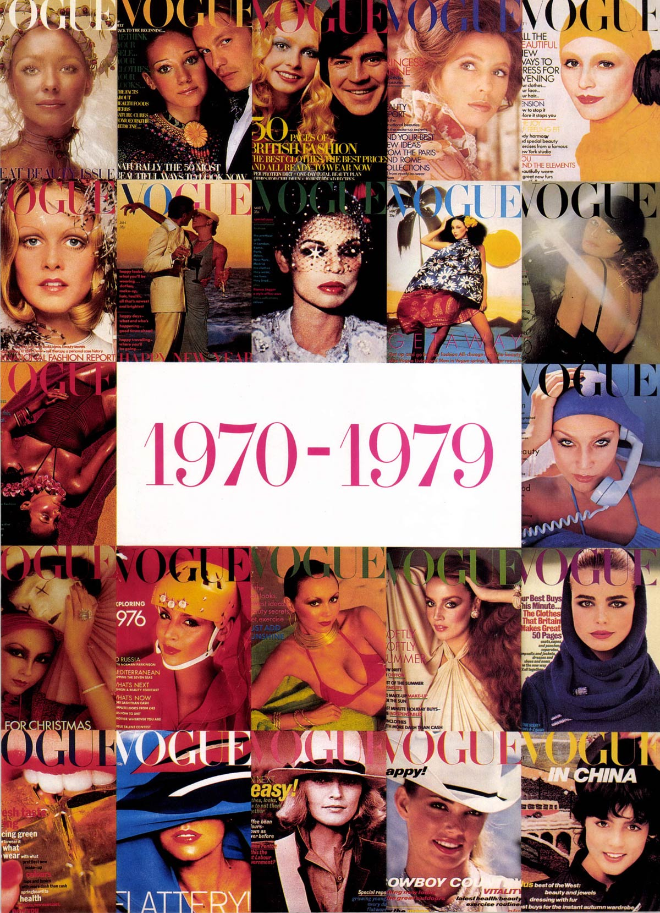

Original Inspiration

I was inspired by the various vintage magazines shown in this scan. I searched for hours to find the original pages online, but unfortunately, I couldn’t locate the sources again and forgot to save them during the early stages of my project. Due to time limitations, I included the scanned inspiration pages to reflect the overall vision.